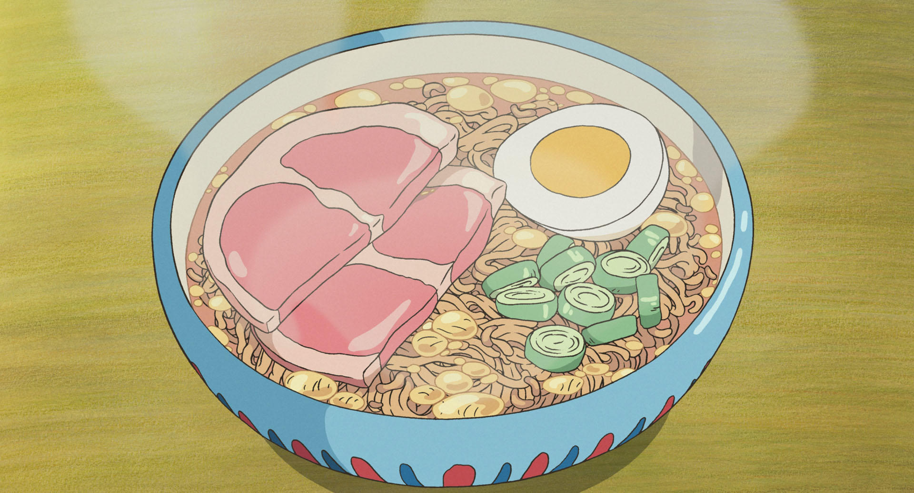

Ponyo é uma encantadora animação de 2008 produzida pelo renomado Studio Ghibli e
dirigida pelo mestre Hayao Miyazaki. Este foi o oitavo filme que Miyazaki dirigiu para o
estúdio e o décimo de sua carreira. A história acompanha a jornada de Ponyo, uma pequena
peixe dourado com traços humanos que foge do oceano e é encontrada por Sosuke, um menino de
cinco anos, após ficar presa em um pote de vidro na praia. A medida que desenvolvem uma
forte amizade, Ponyo manifesta o desejo de se tornar humana, mas sua transformação mágica
acaba desencadeando consequências imprevistas .
Apesar das mudanças que sua magia provoca no mundo, a conexão pura e sincera entre Ponyo e
Sōsuke permanece inabalável. O filme aborda, com a delicadeza típica de Miyazaki, temas como
a harmonia entre o ser humano e o meio ambiente, a força dos laços afetivos e a beleza de
aceitar o outro em sua essência. Cada cena é pintada com cores vivas e um traço expressivo,
envolvendo o espectador em um universo onde a fantasia e a realidade se entrelaçam. Mais do
que uma simples história infantil, Ponyo é uma ode à curiosidade, à descoberta e à
capacidade de enxergar magia nas pequenas coisas da vida. A trilha sonora de Joe Hisaishi
enriquece a narrativa, equilibrando alegria e emoção. A amizade entre Ponyo e Sōsuke
representa a pureza infantil, enquanto os elementos naturais reforçam a mensagem de harmonia
com o meio ambiente. Com seu charme único, o filme continua encantando gerações, mostrando o
poder atemporal das histórias de Miyazaki.
Hayao Miyazaki
Hayao Miyazaki é um dos maiores nomes da animação mundial, reconhecido por sua criatividade,
narrativas profundas e animação artesanal. Seu trabalho vai além do entretenimento,
abordando temas como ecologia, guerra, infância e humanidade de forma poética e crítica. Ele
é frequentemente comparado a Walt Disney no Japão, mas com um estilo único que mistura
fantasia e reflexão social.
O Studio Ghibli, fundado por Miyazaki e Isao Takahata em 1985, revolucionou a animação
japonesa. Diferente de outros estúdios, o Ghibli prioriza histórias ricas em significado e
animação detalhada, muitas vezes feita à mão, sem depender muito de computação gráfica. Seus
filmes, como A Viagem de Chihiro (que ganhou o Oscar de Melhor Animação), Meu Amigo Totoro e
Princesa Mononoke, conquistaram fãs no mundo todo e influenciaram gerações de animadores.
O estúdio também se destaca por trazer protagonistas fortes, especialmente meninas e
mulheres, fugindo dos estereótipos comuns. Além disso, suas obras frequentemente
questionam a relação do ser humano com a natureza e a tecnologia, tornando-as
atemporais.
Graças a Miyazaki e ao Studio Ghibli, a animação japonesa ganhou prestígio
internacional, mostrando que desenhos animados podem ser arte de alto nível, emocionando
tanto crianças quanto adultos.
Miyazaki não utiliza roteiros tradicionais em suas produções. Ele em vez disso desenvolve a
narrativa do filme a medida que cria os storyboards; ele disse: "Nunca sabemos onde a
história irá, mas nós continuamos trabalhando no filme enquanto é desenvolvido". Miyazaki
empregou métodos tradicionais de animação em cada um de seus longas, desenhando cada quadro
a mão; imagens geradas por computador foram empregadas em seus filmes posteriores, a partir
de Mononoke Hime, com o objetivo de "enriquecer o visual", porém procura garantir que cada
produção possa "manter a taxa correta entre trabalhar a mão e no computador ... e ainda
poder chamar meus filmes de 2D.
Incrível né! Acesse a Galeria e veja mais sobre o processo de criação de Ponyo!
Galeria

Divirta-se com o jogo Ponyo Run!
Ajude a Ponyo a pular pelas ondas, quando mais longe mais mágico o oceano se torna!
Desenvolvedor
André Leão
Minha vida foi muito marcada pelos filmes e animações que assisti quando eu era criança, eu
era do tipo de criança que para ficar tranquila bastava colocar algo para assistir ou me dar
papéis para desenhar. Por volta dos 4 anos assisti Ponyo por diversas vezes em casa por meio
de um DVD, esse filme que encantou de tal forma que as cenas nunca mais saíram da minha
cabeça, as músicas, os cenários, as vozes dos personagens me causam uma nostalgia
fantástica, que me preenche todas as vezes que assisto novamente. Além de uma animação
linda, feita à mão, com cores vivas e muitos detalhes. Mesmo sendo simples, ele passa
sentimentos fortes, como a amizade verdadeira, amor inocente e cuidado com o mundo ao nosso
redor.
No começo eu era exclusivamente fascinado pelas sensações que o filme me transmitia, mas eu
não tinha uma mentalidade ainda muito avançada para entender os aspectos e lições mais
profundas do filme, mas ao decorrer da minha vida fui tendo mais essa percepção e isso só me
encantou ainda mais. Comecei a pesquisar mais sobre, e foi aí que descobri a grandeza do
Studio Ghibli e me tornei um verdadeiro fã dos trabalhos de Miyazaki.
Ponyo e dos demais filmes do Studio Ghibli tem uma influência direta na forma como eu
enxergo o mundo. Espero que por meio deste site eu tenha conseguido transmitir para você o
quanto esse filme mudou a minha vida. Muito obrigado! :)